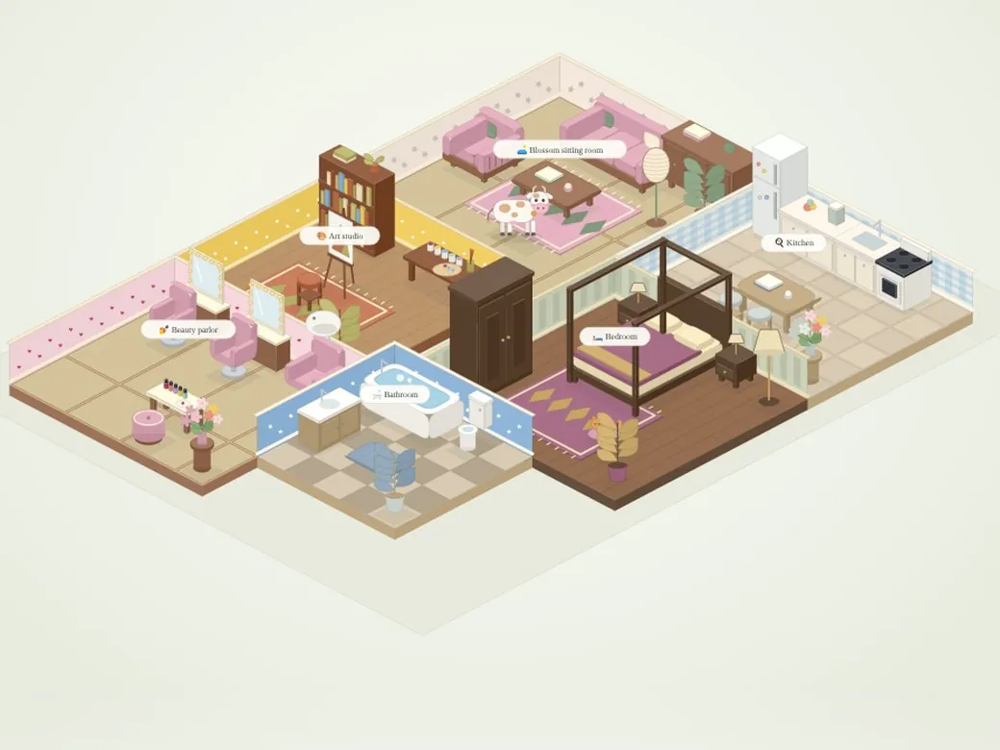
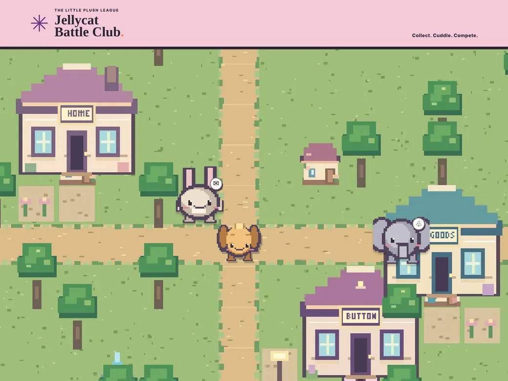

Sports. Data. Nonsense.
A little competition.
A whole lot to explore.
Team hubs. Season-long rivalries. Daily challenges. A growing collection of things I make, play, and share with friends and family.
02 / Fantasy sports
Your season.
Your obsession.
The league doesn’t end when Sunday does. Draft a team, work the numbers, chase a title—and keep the receipts.
Enter the Fantasy hubWho’s winning today
04 / Made with my daughters
Their imagination.
Our next adventure.
Plush companions, magical islands, and a home that’s entirely yours. Designed by Lucy and Charlotte, built together.
Explore their worlds ↗
Charlotte’s world Wild Bloom Isles ↗
Lucy’s world Jellycat Battle Club ↗Writing
35 articlesESPN Chalk · 2014–16
ESPN Chalk: weekly NFL analysis
Before any of this, I spent three NFL seasons writing a weekly ESPN column on contrarian betting value, using Sports Insights data to find where the public was leaning the wrong way. They're behind ESPN+ now, so you may hit a paywall.
Start here
2016 · Week 15Do “must-win” teams actually win?
A late-season question from the contrarian betting archive.
Read on ESPN ↗ 2015 · Wild Card RoundFinding contrarian value in the playoffs
Take the weekly betting analysis into Wild Card weekend.
Read on ESPN ↗All 35 columns2014 to 2016, by season
2016 NFL season15 articles
2015 NFL season16 articles
2014 NFL season4 articles
About
I'm David. I do marketing by day and build this stuff at night, usually because a group chat argument needed settling.
Everything here is made for the people I watch games with, draft with and go out with. Some of it is useful. Most of it is an excuse to put real numbers behind a bad take.
Found a bug, think a grade is wrong, or have an idea for the next game? Email hello [at] davidsolar.dev.